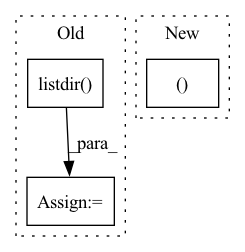

Pattern ID :20947
Before Change
if name in project.working_tree.sources:
raise CliException("Source "%s" already exists" % name)
else:
name = generate_next_name(
list(project.working_tree.sources) + os.listdir() ,
"source", sep="-", default="1")
project.import_source(name, url=args.url, format=args.format,After Change
extra_args = arg_parser.parse_cmdline(args.extra_args)
name, _ = project.add_source(args.path,
format=args.format, options=extra_args, rpath=args.rpath)
on_error_do(project.remove_source, name, ignore_errors=True,
kwargs={"force": True, "keep_data": True})In pattern: SUPERPATTERN
Frequency: 5
Non-data size: 3
Instances Fragment ID: 67395492
Project Name: openvinotoolkit/datumaro
Commit Name: 52f9a95553ff3edfbcb61e30dfd9202485e1b448
Time: 2021-10-13
Author: maxim.zhiltsov@intel.com
File Name: datumaro/cli/contexts/source.py
M Class Name: AnonimousClass
N Class Name: AnonimousClass
M Method Name: add_command(1)
N Method Name: add_command(1)
M Parent Class:
N Parent Class:
M File Name: datumaro/cli/contexts/source.py
N File Name: datumaro/cli/contexts/source.py
M Start Line: 96
M End Line: 134
N Start Line: 223
N End Line: 252
Before Change
def evaluate_performance(input_folder, target_folder):
fake_images = os.listdir( input_folder)
fake_images.sort()
real_images = os.listdir(target_folder)
real_images.sort()
After Change
fake_image = cv2.imread(input_image)
real_image = cv2.imread(target_image)
return mse(real_image, fake_image), psnr(real_image, fake_image)
// custom weights initialization called on netG and netD
def weights_init(m): Fragment ID: 67395493
Project Name: lornatang/srgan-pytorch
Commit Name: 052c40de6d6c916d8dd1ccfc80d4d5fbcd6c2aed
Time: 2020-05-17
Author: liuchangyu1111@gmail.com
File Name: srgan_pytorch/utils.py
M Class Name: AnonimousClass
N Class Name: AnonimousClass
M Method Name: evaluate_performance(2)
N Method Name: evaluate_performance(2)
M Parent Class:
N Parent Class:
M File Name: srgan_pytorch/utils.py
N File Name: srgan_pytorch/utils.py
M Start Line: 32
M End Line: 49
N Start Line: 31
N End Line: 34
Before Change
if not validate_args(args):
quit()
log_files = [
f for f in os.listdir( args.logdir)
if os.path.isfile(os.path.join(args.logdir,
f))
]
After Change
if not validate_args(args):
quit()
sorted_keys, results = get_sorted_results(args.log_dir, args.metric)
for k in sorted_keys:
print(f"{k} = {results[k]}")
Fragment ID: 67395494
Project Name: microsoft/deepspeed
Commit Name: 6124eb37c07dae57f6da01eb07f708fd6e8d4d25
Time: 2021-05-10
Author: olruwase@microsoft.com
File Name: csrc/aio/py_test/parse_aio_stats.py
M Class Name: AnonimousClass
N Class Name: AnonimousClass
M Method Name: main(0)
N Method Name: main(0)
M Parent Class:
N Parent Class:
M File Name: csrc/aio/py_test/parse_aio_stats.py
N File Name: csrc/aio/py_test/parse_aio_stats.py
M Start Line: 130
M End Line: 144
N Start Line: 143
N End Line: 148
Before Change
with open(train_path, "r") as f:
train_data = ujson.load(f)
test_file = os.listdir( test_data_dir) [0]
test_path = os.path.join(test_data_dir, test_file)
with open(test_path, "r") as f:
test_data = ujson.load(f)After Change
with open(test_file, "r") as f:
test_data = ujson.load(f)
return train_data, test_data
def read_client_data(dataset, idx):
train_data, test_data = read_data(dataset, idx) Fragment ID: 67395504
Project Name: tsingz0/pfl-non-iid
Commit Name: 20524d468460f45118d0c169b508fcd440eb79c9
Time: 2021-06-01
Author: 2719584131@qq.com
File Name: system/utils/data_utils.py
M Class Name: AnonimousClass
N Class Name: AnonimousClass
M Method Name: read_data(2)
N Method Name: read_data(1)
M Parent Class:
N Parent Class:
M File Name: system/utils/data_utils.py
N File Name: system/utils/data_utils.py
M Start Line: 77
M End Line: 90
N Start Line: 63
N End Line: 88
Before Change
// You can generate all the bkg distributions using this repo:
// https://github.com/gjoni/trDesign/blob/master/01-hallucinate/src/bkgrd.py
bkg_distribution_paths = sorted([path for path in os.listdir( bkg_dir) if ".npz" in path])
bkg_distribution_lengths = sorted([int(path.split("_")[-1].split(".npz")[0]) for path in bkg_distribution_paths])
for L in bkg_distribution_lengths:After Change
For additional lengths, you can generate background distributions using:
https://github.com/gjoni/trDesign/blob/master/01-hallucinate/src/bkgrd.py
bkg_path, L = None, 0
for bkg_path in sorted(Path(bkg_dir).glob("*.npz")):
L = int(bkg_path.stem.split("_")[-1])
if L >= seq_L:
break Fragment ID: 67395489
Project Name: learn-ventures/trdesign-pytorch
Commit Name: 016e89447408c7bc3682a4326ac3747077027d56
Time: 2021-03-16
Author: lev@learn.ventures
File Name: src/losses.py
M Class Name: Structural_Background_Loss
N Class Name: Structural_Background_Loss
M Method Name: get_best_bkg_match(2)
N Method Name: get_best_bkg_match(3)
M Parent Class: torch.nn.Module
N Parent Class: nn.Module
M File Name: src/losses.py
N File Name: src/losses.py
M Start Line: 103
M End Line: 119
N Start Line: 101
N End Line: 111